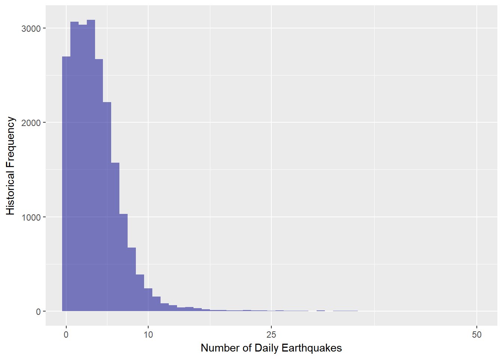
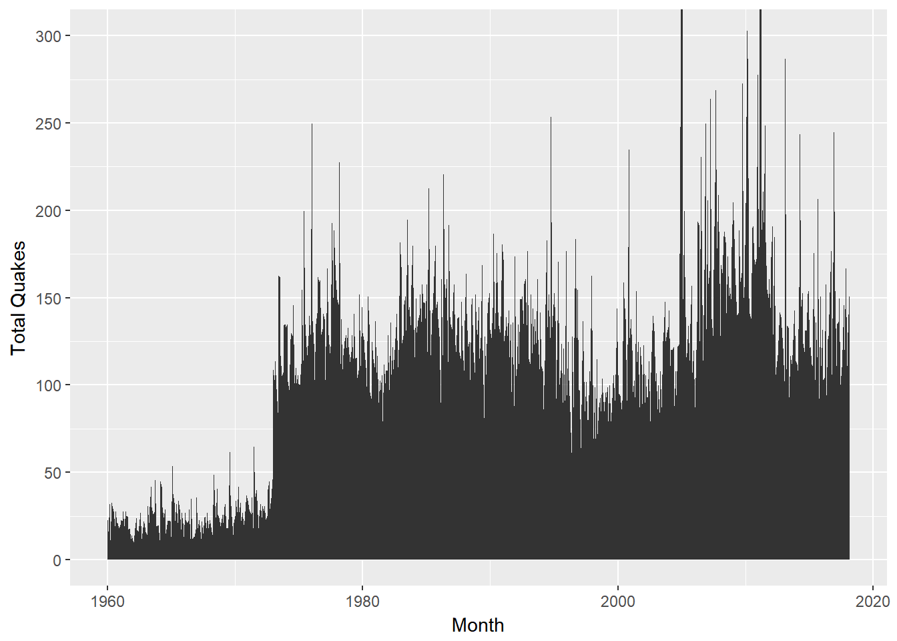
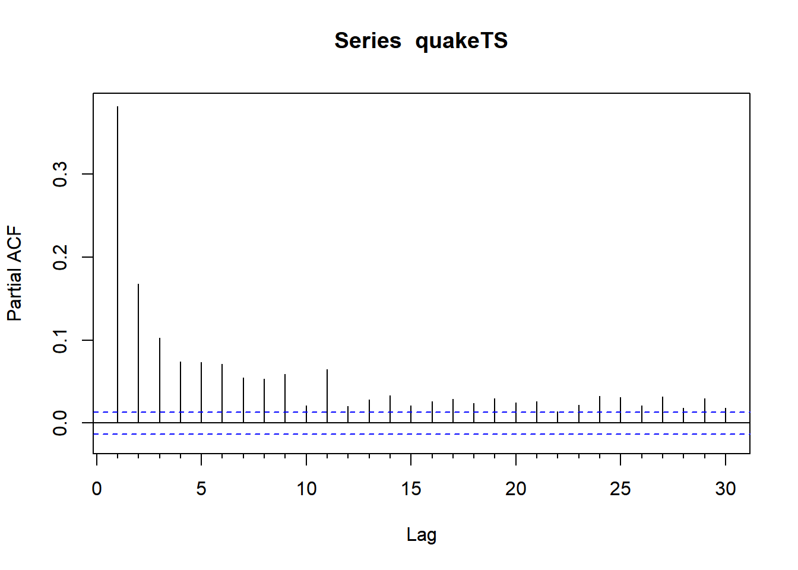
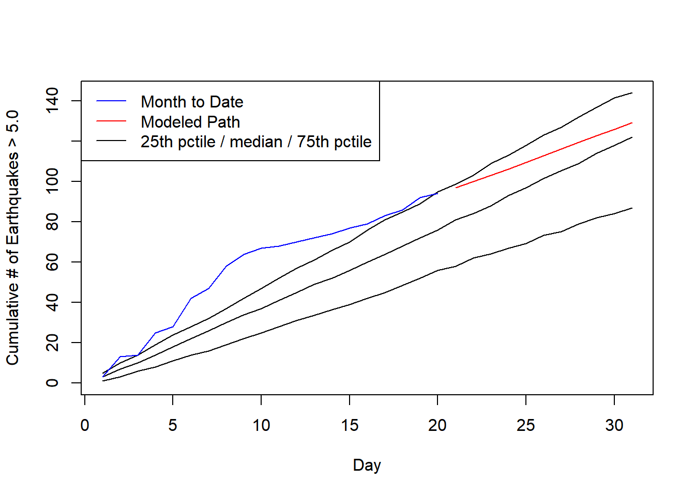

library(jsonlite)
library(geojsonio)
library(RCurl)
library(stringr)
library(dplyr)
library(tidyr)
library(tscount)
library(scales)
library(ggplot2)
library(lubridate)
library(forecast)
pSim <- function(nPeriods, mdl){
modelSim <- tsglm.sim(n = nPeriods, fit = mdl, n_start = 0)
sum(modelSim$ts)
}
sampleTotal <- function(endPoint, fullData, dayCount) {
s <- sum(fullData[(endPoint - dayCount):endPoint])
}# DOWNLOAD DATA
currDate <- Sys.Date()
pathBase <- "https://earthquake.usgs.gov/fdsnws/event/1/query?"
retFormat <- paste0("format=geojson")
startTime <- "starttime=1960-01-01"
endTime <- paste0("endtime=", Sys.Date())
minMag <- "minmagnitude=6"
eqPath <- paste0(pathBase, retFormat, "&", startTime, "&", endTime, "&", minMag)
largeQuakes <- fromJSON(eqPath)
quakeFrame <- largeQuakes$features$properties
# USGS limits downloads, so need to download in sequence to get mag 5 quakes
magSeq <- seq(from = 5.0, to = 6.0, by = 0.05)
for (i in 1:(length(magSeq) - 1)){
minMag <- paste0("minmagnitude=", magSeq[i])
maxMag <- paste0("maxmagnitude=", magSeq[i + 1])
eqPath <- paste0(pathBase, retFormat, "&", startTime, "&", endTime, "&",
minMag, "&", maxMag)
quakeQ <- fromJSON(eqPath)
qFrame <- quakeQ$features$properties
quakeFrame <- rbind(quakeFrame, qFrame)
}
baseDate <- as.POSIXct("1970-01-01T00:00:00.000Z", tz = "GMT")
quakes <- distinct(quakeFrame, ids, .keep_all = TRUE) %>%
mutate(date = baseDate + time / 1000, # time is milliseconds since the epoch
cleanDate = make_date(year(date), month(date), day(date))) %>%
group_by(cleanDate) %>%
summarize(qCount = n())
dateSeq <- data.frame(date = seq.Date(from = min(quakes$cleanDate),
to = max(quakes$cleanDate),
by = "days"))
quakes <- left_join(dateSeq, quakes, by = c("date" = "cleanDate"))
quakes$qCount[is.na(quakes$qCount)] <- 0
quakeTS <- ts(quakes$qCount)ptDens <- ggplot(quakes, aes(qCount)) +
geom_histogram(binwidth = 1, fill = "darkblue", alpha = 0.5) +
scale_x_continuous(breaks = c(0, 10, 25, 50)) +
coord_cartesian(xlim = c(0, 50)) +
labs(x = "Number of Daily Earthquakes", y = "Historical Frequency")
print(ptDens)
historicalSum <- select(quakes, date, qCount) %>%
ungroup() %>%
mutate(monthDate = make_date(year(date), month(date), 1)) %>%
group_by(monthDate) %>%
summarize(totalQ = sum(qCount))
ptHist <- ggplot(historicalSum, aes(monthDate, totalQ)) +
geom_area(stat = "identity") +
labs(x = "Month", y = "Total Quakes") +
scale_y_continuous(breaks = seq(from = 0, to = 300, by = 50)) +
coord_cartesian(ylim = c(0, 300))
print(ptHist)
Pacf(quakeTS, lag.max = 30)
# Build a Time Series Model -----------------------------------------------
# negative binomial time series model
pModel <- tsglm(quakeTS, model = list(past_obs = 1:10),
link = "identity",
distr = "nbinom")
# current total
currentTotal <- filter(quakes, year(date) == 2018, month(date) == 3) %>%
summarize(tot = sum(qCount))
# simulate remaining days
simDays <- as.numeric(as.Date("2018-03-31") - max(quakes$date))
simVec <- as.matrix(rep(simDays, 10000))
modelSim <- apply(simVec, 1, pSim, mdl = pModel) + as.numeric(currentTotal)
# break points for distribution
brks <- c(0, 101, 140, 174, 213, 1000)
modelDens <- hist(modelSim, breaks = brks, plot = FALSE)
modelProbs <- modelDens$count / 10000# Random Sample -------------------------------------------------------
endPoints <- sample((simDays + 1):nrow(quakes), 100000, replace = TRUE)
sampleTotals <- apply(as.matrix(endPoints), 1, sampleTotal,
fullData = quakes$qCount, dayCount = simDays)
sampleTotals <- sampleTotals + as.numeric(currentTotal)
sampleDens <- hist(sampleTotals, breaks = brks, plot = FALSE)
sampleProbs <- sampleDens$count / length(sampleTotals)
# Comparison --------------------------------------------------------------
compFrame <- data.frame(Threshold = c("Less than 101", "101 to 140", "140 to 174",
"174 to 213", "More than 213"),
Model = percent(modelProbs),
Bootsrap = percent(sampleProbs))print(compFrame)## Threshold Model Bootsrap
## 1 Less than 101 0.9% 7.3%
## 2 101 to 140 77.2% 45.9%
## 3 140 to 174 19.0% 41.8%
## 4 174 to 213 2.5% 3.9%
## 5 More than 213 0.4% 1.1%# Distribution By Day -----------------------------------------------------
quakes <- ungroup(quakes) %>%
mutate(d = day(date), m = month(date), y = year(date)) %>%
group_by(m, y) %>%
mutate(runSum = order_by(d, cumsum(qCount)))
dayStats <- ungroup(quakes) %>%
group_by(d) %>%
summarize(med = median(runSum),
avg = mean(runSum),
q25 = quantile(runSum, probs = 0.25),
q75 = quantile(runSum, probs = 0.75))
pt <- ggplot(quakes, aes(d, runSum)) +
geom_point() +
geom_line(data = dayStats, aes(d, med), color = "red")
currMonth <- filter(quakes, m == 3, y == 2018)
fcst <- predict(pModel, n.ahead = simDays)
fwdPred <- data.frame(qTot = cumsum(as.matrix(fcst$pred))) %>%
mutate(d = seq(from = 31 - simDays + 1, to = 31, by = 1),
qTot = qTot + as.numeric(currentTotal))# forecast plot with historical path
plot(med ~ d, data = dayStats, type = "l",
ylim = c(0, max(dayStats$q75, fwdPred$qTot)),
xlab = "Day", ylab = "Cumulative # of Earthquakes > 5.0")
lines(q25 ~ d, data = dayStats)
lines(q75 ~ d, data = dayStats)
lines(runSum ~ d, data = currMonth, col = "blue")
lines(qTot ~ d, data = fwdPred, col = "red")
leg.txt <- c("Month to Date", "Modeled Path", "25th pctile / median / 75th pctile")
legend("topleft", leg.txt, lty = 1, col = c("blue", "red", "black"))